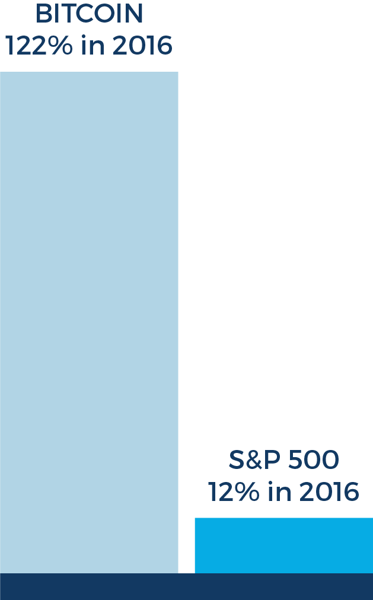

BUILDING THE FUTURE
Exponential technologies have incredible impacts on our society. They re-imagine the world in ways that inspire and surprise us. Every year, from transaction growth, to new users coming online, the bitcoin network, and the block chain have been doubling in size. Blockchain is committed to bringing block chain technology and the power of open finance to every corner of the world. And we’re dedicated to leading research that helps us to better understand this technology’s impact on the broader world.
FEATURED
The Digital Revolution: Bitcoin and the Future of Digital Assets
The digital revolution and the popularity of bitcoin have made it clear that digital assets have become a noteworthy candidate for alternative asset investing.
INTERNAL R&D
Our R&D team is pioneering advancement in block chain technology. The team most recently unveiled the first prototype of a revolutionary payment channel, called Thunder. The technology enables users and vendors to send and receive payments without touching the main block chain. Even in the prototype phase, Thunder has the potential to facilitate secure, trustless and nearly instant payments, unleash the power of microtransactions and allow the network to handle heavy loads, and increase user privacy.
DIGITAL ASSET RESEARCH LAB
Blockchain recently partnered with the Centre for Cryptocurrency Research and Engineering (IC3RE) at Imperial College London to launch the Digital Asset Research Lab, a leading international centre for ongoing research and application activity related to cryptocurrency and block chain technology.

THE DIGITAL
REVOLUTION
The digital revolution and the popularity of bitcoin have made it clear that digital assets are a noteworthy candidate for alternative asset investing. We recently partnered with Global Economics Group to evaluate bitcoin across three dimensions: 1) fundamental market metrics, 2) through the lens of portfolio theory, and 3) an economic analysis of a digital asset’s response to events that cause global financial market uncertainty. Only the future will tell of bitcoin's ultimate success, but our analysis shows that the future of money is digital – and bitcoin is the first early success of that broad, world-changing vision.
Chart shows that: In 2016 the value of bitcoin increased 122%, from $432 to $960 per unit. By comparison, for 2016, the S&P 500 total return was approximately 12%.